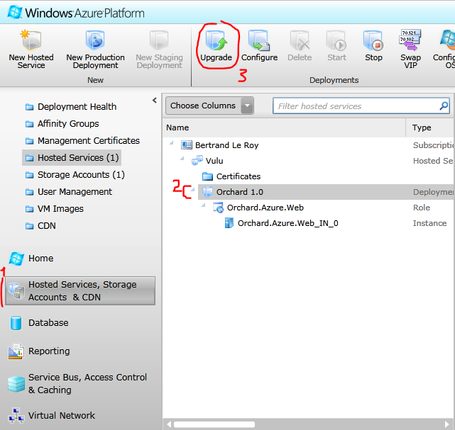
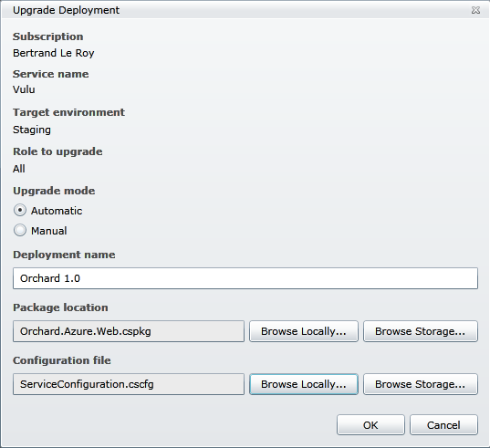

A new version of a CMS is an important event in the life of a site, and transitioning to it should ideally be simple. Unfortunately, Orchard does not currently have an automated upgrade mechanism. This topic will show how to upgrade to a new version as painlessly as possible today while focusing on making your data safe.
CMS的新版本是网站生命中的重要事件，理想情况下转换为简单。不幸的是，Orchard目前没有自动升级机制。本主题将展示如何尽可能轻松地升级到新版本，同时专注于确保数据安全。
A Word of Warning
一句警告
No matter which method you choose to use to upgrade your site, you are going to have to overwrite a lot of files in the process. This should emphasize the requirement to backup first, but it should also call your attention to any modifications you made to common files. For example, if you made any modifications to core modules and/or the framework (something you shouldn't do: custom modules and themes should be used instead), you will lose them, or you will need to re-apply your changes after the upgrade. Any modification you made to web.config or other common files will also need to be re-applied after the process.
无论您选择使用哪种方法升级您的网站，您都必须在此过程中覆盖大量文件。这应该首先强调备份的要求，但是它也应该引起您对常用文件所做的任何修改的注意。例如，如果您对核心模块和/或框架进行了任何修改（您不应该这样做：应该使用自定义模块和主题），您将丢失它们，或者您需要在之后重新应用更改升级。您对web.config或其他常见文件所做的任何修改也需要在该过程之后重新应用。
If you made modifications to permissions on the files and folders inside your site, they may also get reset in the upgrade and need to be re-applied.
如果您对站点内的文件和文件夹的权限进行了修改，它们也可能会在升级时重置，需要重新应用。
Upgrading a Running Instance of Orchard to a New Version
将Orchard的运行实例升级到新版本
The instructions in this section only apply for a standalone Orchard web site. If you are working with the full source code of Orchard, please refer to the "if you have a source code enlistment" section of this page.
本节中的说明仅适用于独立的Orchard网站。如果您正在使用Orchard的完整源代码，请参阅“[如果您有源代码登记]”（升级到新版本的Orchard版本#if-you-have -a-source-code-enlistment）“本页的一部分。
It is highly recommended that you work on a local copy of your site throughout the update process.
强烈建议您在整个更新过程中处理站点的本地副本。
-
Make a backup of everything in your site, including the database. This is extremely important so that you can roll back to a running site no matter what happens during migration.
-
备份站点中的所有内容，包括数据库。这非常重要，因此无论迁移过程中发生什么，您都可以回滚到正在运行的站点。 *
-
Visit the Settings pages on your current Orchard instance and make a note of the current settings. This information might not be needed during the migration process, but if it is, it will otherwise be difficult to get the information.
-
访问当前Orchard实例上的 Settings 页面，记下当前设置。在迁移过程中可能不需要此信息，但如果是，则获取信息将很困难。
-
Visit the Modules/Features and the Themes pages on your current Orchard instance and make a note of all the modules and themes you have installed.
-
访问当前Orchard实例上的模块/功能和主题页面，并记下您已安装的所有模块和主题。
-
Download a copy of the site from the server to your local computer. If you are routinely working with a staging environment from which you publish to production, you already have that local copy, but the data and media might be out of date. Make sure you download the
App_Dataand Media folders from the server. -
将站点的副本从服务器下载到本地计算机。如果您经常使用从中发布到生产的临时环境，则您已拥有该本地副本，但数据和介质可能已过期。确保从服务器下载
App_Data和_Media_文件夹。 * -
If you're using a SQL Server Compact database, you've copied the site data by downloading the
App_Datafolder. If your site is using SQL Server, you can copy that data to a local server in order to work with up-to-date data. However, this isn't required for migration. If you want to work with a local database, you'll also need to edit the settings.txt file for each of the tenants. The settings.txt files can be found underApp_Data\Sites\DefaultorApp_Data\Sites\\[NameOfTheTenant\]. -
如果您使用的是SQL Server Compact数据库，则可以通过下载“App_Data”文件夹来复制站点数据。如果您的站点使用SQL Server，则可以将该数据复制到本地服务器以使用最新数据。但是，迁移不需要这样做。如果要使用本地数据库，还需要编辑每个租户的_settings.txt_文件。 _settings.txt_文件可以在
App_Data \\ Sites \\ Default或App_Data \\ Sites \\\\ [NameOfTheTenant \\]下找到。 * -
In a new, empty directory, install a fresh copy of the latest version of Orchard, but don't go through setup.
-
在新的空目录中，安装最新版本的Orchard的新副本，但不要进行设置。 *
-
Copy your existing site's Media folder into the new directory.
-
将现有站点的_Media_文件夹复制到新目录中。 *
-
Copy the remaining module and themes directories that you have on your existing site and that are not already in the new one into the new directory's Modules and Themes directories.
-
将现有站点上已有的剩余模块和主题目录复制到新目录的_Modules_和_Themes_目录中。 *
-
Copy the
App_Datafolder from the existing site into the new directory. -
将
App_Data文件夹从现有站点复制到新目录中。 * -
Point a local web server to the new directory. You can use IIS; in that case, use IIS Manager to create a new web site that points at the directory and then navigate to it. Alternatively, you can use WebMatrix and IIS Express; to do that, right-click the directory in Windows Explorer and choose Open as a Web Site with Microsoft WebMatrix and then run the site. Finally, you can open the site in Visual Studio as a web site and run it. The new site will have all the data from the old site and have all the new features.
-
将本地Web服务器指向新目录。你可以使用IIS;在这种情况下，使用IIS管理器创建一个指向目录的新网站，然后导航到该网站。或者，您可以使用WebMatrix和IIS Express;为此，右键单击Windows资源管理器中的目录，然后选择作为带有Microsoft WebMatrix的网站打开，然后运行该站点。最后，您可以在Visual Studio中将该站点作为Web站点打开并运行它。新网站将包含旧网站的所有数据，并具有所有新功能。
-
Go into the dashboard. Modules should have already upgraded themselves automatically. In rare cases, you may be prompted to upgrade features. Click Modules and upgrade each of the modules one by one until they are all up to date. If this doesn't work, it means that something is wrong with your install and/or one of the modules you're using, and you should investigate further in
App_Data\logs. -
进入仪表板。模块应该已经自动升级。在极少数情况下，系统可能会提示您升级功能。单击 Modules 并逐个升级每个模块，直到它们都是最新的。如果这不起作用，则意味着您的安装和/或您正在使用的其中一个模块出现问题，您应该在“App_Data \ logs”中进一步调查。
-
Go to the Orchard Gallery and get the latest version of all the modules you have on your site.
-
转到Orchard Gallery并获取您网站上所有模块的最新版本。 *
-
Some versions of Orchard come with version-specific upgrade features. Go to Modules and locate the "Upgrade" feature. Enable it, then click on the new upgrade menu entry that was added to the admin menu. Visit all the relevant tabs and execute the required upgrade actions they present. Once you're done, the feature can be disabled, which will remove the menu entry.
-
某些版本的Orchard具有特定于版本的升级功能。转到模块并找到“升级”功能。启用它，然后单击添加到管理菜单的新升级菜单条目。访问所有相关选项卡并执行它们提供的所需升级操作。完成后，可以禁用该功能，这将删除菜单项。 *
Publishing the Upgraded Site
发布升级版网站
You can deploy the locally upgraded site to your production server using your preferred deployment solution. That might be Visual Studio Web deployment, WebMatrix, or even FTP. You again have a choice of wiping out the target directory before you deploy. Make your choice depending on your deployment method, how clean you want the resulting directory to be, and on how long it's acceptable to keep the site down.
您可以使用首选部署解决方案将本地升级的站点部署到生产服务器。这可能是Visual Studio Web部署，WebMatrix甚至FTP。在部署之前，您还可以选择擦除目标目录。根据您的部署方法，您希望生成的目录的清洁程度以及保持网站关闭的可接受时间做出您的选择。
As you deploy, make sure that the target settings.txt files aren't overwritten, so that the production site continues to point to the production database.
在部署时，请确保不覆盖目标_settings.txt_文件，以便生产站点继续指向生产数据库。
While you deploy, you might want to shut the site down by dropping an app_offline.htm file into the root. Remove that file once you're done.
在部署时，您可能希望通过将app_offline.htm文件放入根目录来关闭站点。完成后删除该文件。
Once deployed, manual upgrade actions (for example, those from the "Upgrade" feature) need to be performed again on the deployed production site.
部署后，需要在已部署的生产站点上再次执行手动升级操作（例如，来自“升级”功能的操作）。
Upgrading An Orchard Site In-Place
正式升级果园场地
It is possible to upgrade a site in-place, if you can't or don't want to work with a local copy and then publish it. The procedure is less clean but it works.
如果您不能或不想使用本地副本然后发布它，则可以就地升级站点。程序不太干净但是有效。
-
Backup everything (site and database).
-
备份一切（站点和数据库）。 *
-
Download the new version to your local machine.
-
将新版本下载到本地计算机。 *
-
Add
app_offline.htmto the root of the site during the upgrade. This effectively tells the web server to return this page for all requests. You should put a message such as "The site is currently being updated. Thank you for your patience. Please try again later." in the file. -
在升级期间将
app_offline.htm添加到站点的根目录。这有效地告诉Web服务器为所有请求返回此页面。您应该输入一条消息，例如“该网站目前正在更新。感谢您的耐心等待。请稍后再试。”在文件中。 * -
Delete what's in bin. This ensures that old versions of binaries that won't get replaced will not continue to be picked up by the application.
-
删除bin中的内容。这可确保应用程序不会继续获取不会被替换的旧版本二进制文件。 *
-
Delete the
App_Data\Dependenciesfolder. Orchard will rebuild this folder on startup. This ensures that old versions of module assemblies will not be picked up by the application. -
删除
App_Data \\ Dependencies文件夹。 Orchard将在启动时重建此文件夹。这可确保应用程序不会拾取旧版本的模块程序集。 * -
Extract the new version's zip file and copy what's in its Orchard folder over the server's Orchard web directory (answer yes to all prompts to overwrite).
-
解压缩新版本的zip文件，并将Orchard文件夹中的内容复制到服务器的Orchard Web目录中（对所有提示覆盖都回答“是”）。 *
-
Remove the
app_offline.htmlfile. -
删除
app_offline.html文件。 * -
The site should be running now. Log-in and go into admin.
-
该网站现在应该正在运行。登录并进入管理员。 *
-
Go into the dashboard. Modules should have already upgraded themselves automatically. In rare cases, you may be prompted to upgrade features. Click Modules and upgrade each of the modules one by one until they are all up to date. If this doesn't work, it means that something is wrong with your install and/or one of the modules you're using, and you should investigate further in
App_Data\logs. -
进入仪表板。模块应该已经自动升级。在极少数情况下，系统可能会提示您升级功能。单击 Modules 并逐个升级每个模块，直到它们都是最新的。如果这不起作用，则意味着您的安装和/或您正在使用的其中一个模块出现问题，您应该在“App_Data \ logs”中进一步调查。
-
Go to the Orchard Gallery and get the latest version of all the modules you have on your site.
-
转到Orchard Gallery并获取您网站上所有模块的最新版本。 *
-
Some versions of Orchard come with version-specific upgrade features. Go to Modules and locate the "Upgrade" feature. Enable it, then click on the new upgrade menu entry that was added to the admin menu. Visit all the relevant tabs and execute the required upgrade actions they present. Once you're done, the feature can be disabled, which will remove the menu entry.
-
某些版本的Orchard具有特定于版本的升级功能。转到模块并找到“升级”功能。启用它，然后单击添加到管理菜单的新升级菜单条目。访问所有相关选项卡并执行它们提供的所需升级操作。完成后，可以禁用该功能，这将删除菜单项。 *
You are done.
你完成了。
Upgrading an Azure Instance of Orchard
升级Orchard的Azure实例
Note: This Azure documentation is hugely out of date.
注意：此Azure文档已大大过时。
-
You should already have the full source code, with your modifications if you had any (additional modules or themes). Upgrade that by copying the source of the new version over it (overwrite whenever asked), or by doing a Git update to the desired version. If you do not already have the full source code, then that means you don't have any changes to the default distribution. In that case just get the source code for the new version. In any case, at this point you should have a local directory on your development machine that has the code for the new version, plus any themes and modules you may have added, and no data (be it media or database, as on Azure you are using blob storage for the former, and Sql Azure for the latter). All that remains to be done is to build the new package and deploy it.
-
如果您有任何（其他模块或主题），您应该已经拥有完整的源代码和修改。通过在其上复制新版本的源（在被要求时覆盖）或通过对所需版本进行Git更新来升级。如果您还没有完整的源代码，那么这意味着您没有对默认分发进行任何更改。在这种情况下，只需获取新版本的源代码。在任何情况下，此时您的开发计算机上应该有一个本地目录，其中包含新版本的代码，以及您可能添加的任何主题和模块，以及没有数据（无论是媒体还是数据库，就像在Azure上一样）正在使用blob存储为前者，而Sql Azure用于后者。剩下要做的就是构建新的包并进行部署。 *
-
Run clickToBuildAzurePackage.cmd. This file should be at the root of your source code folder. If it's not there (it was missing from older release files), get it and other root files from the relevant version in http://orchard.codeplex.com/SourceControl/list/changesets
-
运行clickToBuildAzurePackage.cmd。此文件应位于源代码文件夹的根目录下。如果它不存在（旧版本文件中缺少它），请从http://orchard.codeplex.com/SourceControl/list/changesets中的相关版本获取它和其他根文件 *
-
Unzip artifacts/Azure/AzurePackage.zip
-
解压缩工件/ Azure / AzurePackage.zip *
-
Open ServiceConfiguration.cscfg and replace the value of the DataConnectionString with your DefaultEndpointsProtocol=https;AccountName=your-account-name;AccountKey=your-account-key
-
打开ServiceConfiguration.cscfg并将DataConnectionString的值替换为DefaultEndpointsProtocol = https; AccountName = your-account-name; AccountKey = your-account-key *
-
Open the Azure Management Portal, go to Hosted Services, Storage Accounts & CDN and choose your deployment target. Click Upgrade. 
-
打开Azure管理门户，转到托管服务，存储帐户和CDN，然后选择部署目标。单击升级。 ！[]（../附件/升级-A-站点到一个新版本 - 的 - 果园/ AzureDeployNewPackage.PNG） *
-
Browse to the package and config file, click OK. 
-
浏览到包和配置文件，单击“确定”。 ！[]（../附件/升级-A-站点到一个新版本 - 的 - 果园/ AzureDeployNewPackageDialog.PNG） *
-
Log-in and go to admin.
-
登录并转到管理员。 *
-
Go into the dashboard. Modules should have already upgraded themselves automatically. In rare cases, you may be prompted to upgrade features. Click Modules and upgrade each of the modules one by one until they are all up to date. If this doesn't work, it means that something is wrong with your install and/or one of the modules you're using, and you should investigate further in logs.
-
进入仪表板。模块应该已经自动升级。在极少数情况下，系统可能会提示您升级功能。单击 Modules 并逐个升级每个模块，直到它们都是最新的。如果这不起作用，则表示您的安装和/或您正在使用的其中一个模块出现问题，您应该在日志中进一步调查。
-
Some versions of Orchard come with version-specific upgrade features. Go to Modules and locate the "Upgrade" feature. Enable it, then click on the new upgrade menu entry that was added to the admin menu. Visit all the relevant tabs and execute the required upgrade actions they present. Once you're done, the feature can be disabled, which will remove the menu entry.
-
某些版本的Orchard具有特定于版本的升级功能。转到模块并找到“升级”功能。启用它，然后单击添加到管理菜单的新升级菜单条目。访问所有相关选项卡并执行它们提供的所需升级操作。完成后，可以禁用该功能，这将删除菜单项。 *
You're done.
你完成了。
If You Have a Source Code Enlistment
如果您有源代码登记
If you are working with a source code enlistment, the update process is going to be extremely simple because you are already going through it every time you sync your source code directory with the repository. When the time comes to upgrade, just get the latest changes and sync to the latest in the default branch.
如果您正在使用源代码登记，则更新过程将非常简单，因为每次将源代码目录与存储库同步时，您都已经完成了这一过程。到升级时，只需获取最新更改并同步到默认分支中的最新更改。
Import/Export
进出口
The Import/Export module
[导入/导出]（http://gallery.orchardproject.net/List/Modules/Orchard.Module.Orchard.ImportExport）模块
can be used to do clean data migrations from one version to another.
可用于执行从一个版本到另一个版本的干净数据迁移。
Applying a framework patch
应用框架补丁
Occasionally, we may release small updates in the form of a patch to one or several dlls.
有时，我们可能会以补丁的形式向一个或多个dll发布小更新。
These patch files are regular zip files that contain updated dll files.
这些补丁文件是包含更新的dll文件的常规zip文件。
To install such a patch, first extract the zip, then make a copy of the version of those files that are already
要安装此类补丁，请首先解压缩zip，然后复制已经存在的那些文件的版本
in the bin folder of your site. Then, replace the existing copy with the one from the patch file.
在您网站的bin文件夹中。然后，将现有副本替换为修补程序文件中的副本。